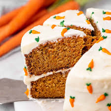

Denzel's Baking
Hello! This is a website full of sweet recipes! My love for baking sprouted at the tender age of 10, when my grandmother helped me bake up my first batch of chocolate chip cookies
Recipes...
Almond Croissants

Ingredients
- 1 sheet of puff pastry
- 1/2 cup of almond paste
- 1/4 cup of powdered sugar
- 1 egg (for egg wash)
Instructions
- Preheat the oven to 375°F
- Roll out the puff pastry
- Cut it into triangles
- Spread a thin layer of almond paste on each triangle
- Roll each triangle from the base to the tip and curve into a crescent shape
- Brush with egg wash and sprinkle with powdered sugar
- Bake for 15-20 minutes until it’s golden brown
- Cool and Enjoy!
Sourdough Bread
Ingredients
- 1 cup sourdough starter
- 1 1/2 cups warm water
- 4 cups bread flour
- 1 1/2 teaspoons salt
Instructions
- Mix the starter, water, and 3 cups of flour in a large bowl
- Add salt, and remaining flour 1 tablespoon at a time until they are fully incorporated
- Knead the dough on a floured surface for about 15 minutes
- Place the dough in a lightly greased bowl
- Cover it and let it rise for about 5 hours
- Shape the dough into a loaf
- Leave to rest for 30 minutes
- preheat your oven to 450°F
- bake for about 30 minutes until it's golden brown
- Enjoy!
Classic Carrot Cake

Ingredients
- 2 cups all-purpose flour
- 2 cups granulated sugar
- 1 teaspoon baking soda
- 2 teaspoons cinnamon
- 1/2 teaspoon salt
- 1 cup vegetable oil
- 4 large eggs
- 2 cups grated carrots
- 1 cup crushed pineapple
- 1/2 cup chopped walnuts
Instructions
- Preheat the oven to 350°F
- Mix together the flour, sugar, baking soda, cinnamon, and salt in a large bowl
- Stir in the oil and eggs until smooth
- Fold in the carrots, pineapple, and walnuts
- Pour the batter into a greased baking pan
- Bake for 30-35 minutes
- Allow the cake to cool before frosting with cream cheese frosting
- Enjoy!
home